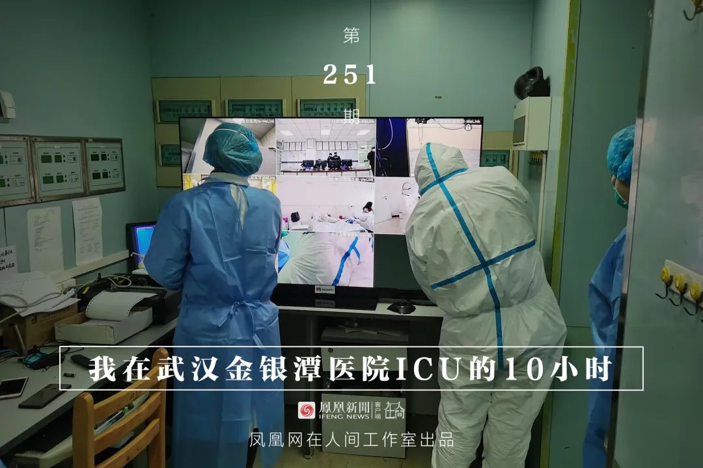
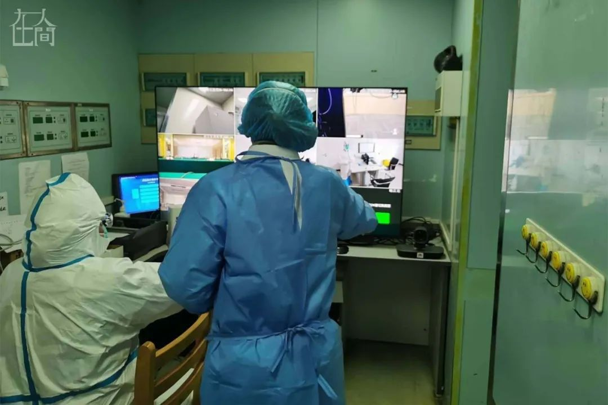
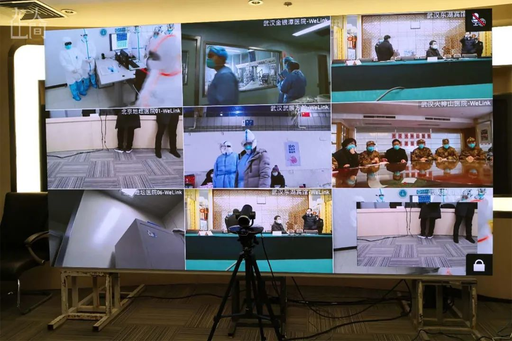
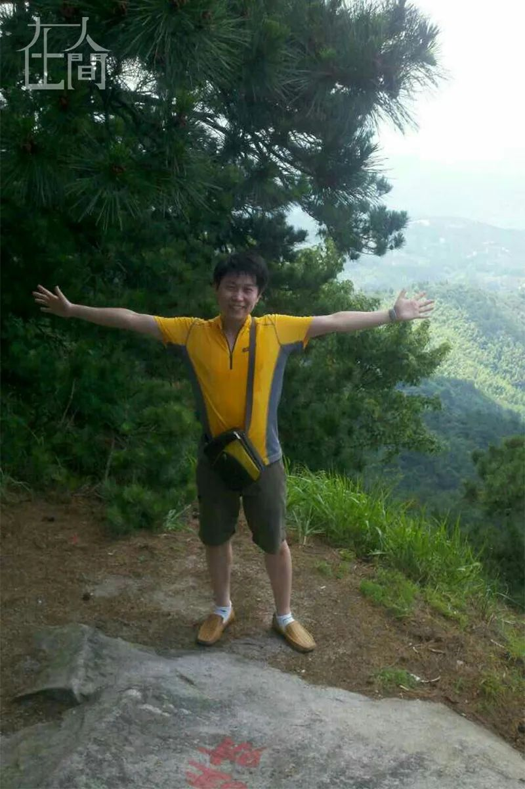
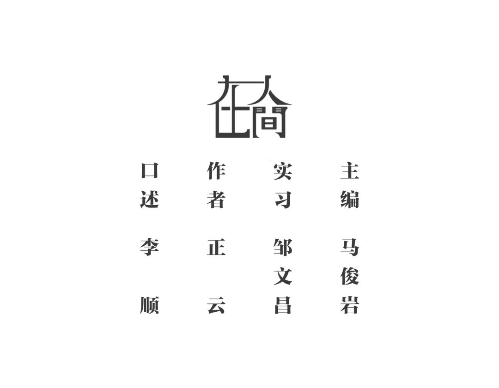

口述实录：一个急转弯般的加速，他们就离去了 | 武汉武汉
原文链接 备份链接 “我们经历着生活中突然降临的一切，毫无防备。”生命中不能承受之轻，用来形容这些天，是那样的贴切。 “时代的一粒灰，落到个人头上，就是一座山。”在突然被按下暂停键的危城武汉，既有个人的茫然无助，也有凡人的挺身而出。恐慌， …


凤凰新闻客户端 凤凰网在人间工作室出品
打开凤凰新闻客户端，搜索「在人间」并关注
一
2月8日元宵节。晚上9点多，家里老人小孩都已经睡了。我和妻子还没睡，在刷手机看新闻。突然，工作群里冒出消息，主管说“北京武汉视频紧急保障，涉及医院连线，由谈知亮负责联系好全套防护装备。”接着，群里发了穿脱防护服的视频指导。
我一惊，突然感受到一股紧张的氛围。但转念一想，武汉有这么多人，不一定会找到我。
我叫李顺，在华为工作，驻点武汉，服务于运营商通信业务，就是保障你手机的网络通信能够打电话，能够上网。今年由于武汉封城，好多外地同事回不去，留在武汉过年的有100人左右。
但没一会儿，主管就给我打电话了。因为是特殊情况，又是疫区，大家自愿，也可以不去。我简单了解了任务信息，虽然比较纠结，但考虑了一下，还是回复“我会待命，随时可以出去”。
挂了电话，妻子在我旁边也愣了，眼睛死死盯着我。我赶紧安慰她，“工作需要嘛”。我们做通信保障，经常会有一些紧急任务，比如这里出了网络故障，那你就得去现场解决问题。我跟妻子很快就商定，出完这次任务之后，我去做自我隔离。
没想到，当晚马上就要出发了。
这次任务在武汉涉及五处，除东湖宾馆外，其余四处是医院，武汉协和医院西院区、火神山医院、金银潭医院、武展的方舱医院，都是接收新冠肺炎病人的地方。我们要安装设备，让武汉的五个地点实现与北京的视频会议连线。
这一套线上视频会议系统是华为云WeLink，通过摄像头和65寸的智慧屏承载，让远程会诊更实时也更清晰。
当时知道去医院，具体去哪还不知道，但很快就分配了。根据驻地远近，我被派到金银潭医院。“运气太差，属于‘下下签’”，我有些自嘲地想。
作为武汉人，我们都清楚，金银潭医院平时只收治传染病人，其他的病不看。这一次它就只收治新冠肺炎病人，而且都是重症患者。
我没有告诉妻子我去哪家医院，到现在她还不知道。
接完电话，我就等公司的车过来接我。夜里12点，我们去公司领防护装备，防护服就是一件上下连体衣，穿比较简单，就是把自己尽量密封起来。我们两个人一组，一个人负责调网络，另一个人负责把视频直播连线的设备搭起来。

■ 在华为湖北代表处楼下，李顺穿上防护服。
到金银潭医院时，接近凌晨两点。路上我们联系院方，院方说这个电视要放到ICU病房里面的护士站，当时听到ICU又崩溃了一把，但没有退路，任务还是要完成。
到了医院门口，很安静，金银潭医院的标志很大，红色的几个大字闪着红光。我们从员工通道直接去了七楼ICU病区。
我们扛着设备，包括65寸的电视机屏，一点点拖进电梯，然后再把它从电梯里拖出来。映入眼帘的就是“清洁区”三个大字，玻璃门的另一边就是ICU病房。我拿手机拍了张照片。

■ 清洁区和非清洁区之间的玻璃门。
院区主要有两个区域，清洁区跟非清洁区，非清洁区就是ICU病区。两区之间的过道中间有一个门，进去后，里面是ICU病区，晚上护士都在那边。清洁区其实很小，旁边有几个房间是清洁房，还有一个临时搭的地方，非常简易，像宿舍一样，可能是值班护士休息的地方。
凌晨的医院里没什么人，我只看到门口值班的保安师傅和值班的护士。ICU外面也没有家属，只有医护人员。整体非常安静。

■ 李顺的同事在调测设备旁的会议室工作。
值班护士帮我们开了门，把我们带到清洁区。我们当时考虑，尽量先在清洁区把设备组装和调试好，再搬去非清洁区，这样在里面的时间可以短一些。我们布局装备的时候，院长过来协调相关事宜，他还在旁边放了“武汉加油”四个字。

■ 在金银潭医院ICU护士站调试设备。
从作业的角度来讲，其实比较简单。但是因为是在病区工作，心理压力比较大，我们所有东西都戴了双份，洗手液也随身带着，非常小心谨慎。院区到处都挂着免洗手的消毒液，我们动不动就洗一下。防护服穿在身上，里面像蒸桑拿，内衣基本上都汗湿了，外面却凉嗖嗖的。在那个区域里面，没人打电话，手机都用塑料袋包起来。

■ 在金银潭医院ICU护士站调试设备。
大概是凌晨6、7点，设备组装调试完了。护士长帮我们取了两份早餐，我们吃得小心翼翼。白班的医护上班了，他们一般先在清洁区开早会，再去ICU病房工作。我们听到，有些医生来了之后一起商量病人的治疗方案，用哪一种方案，怎样用药。
快到7点半时，我们开始进ICU病区。进去之前，护士长让我们把口罩和头套又换了一遍。我们就想着尽快把东西装起来，尽快撤出去。护士站对面就是病房，一个病房里面有4、5张病床，周边有各种设备，病房的门都是密封的。
大概到中午，我们完成了北京和武汉这边五个点的连线，试音，调整，就撤了。参与这个项目的有好几十号人，我在这个里面只是一个很小的部件，推进整个事情最终落地。这是整个团队的努力成果。

■ 武汉与北京通过远程视频会议系统连线。
2月10号下午，北京与武汉进行了连线。这也是一个远程会诊系统，可以让北京的专家对武汉医院的重症患者进行远程会诊。当我在电视上看到这一幕时，觉得自己做的事情非常有意义。
二
其实这不是我第一次在疫情期间出任务。武汉建火神山和雷神山这两座医院时，通信保障也是我们支撑运营商完成的。
1月26日晚上，主管打电话说，火神山5G站点已经开通，要网络优化，通知我去火神山现场。第二天一早我就去了。火神山医院要在10天内完工交付，收治病人。早一点优化网络，就能早一点保障医院的网络运行，这是通信人的职责所在。
站点开通了就是说已经建好了基站。一个一个的基站建起来之后是相对独立的，网络优化就是把它们组合成一张网，通过测试、优化，把覆盖和干扰的问题解决，这样用户体验才会更好。
去现场那天，是火神山建设的第4、5天了。一路都没有人，交通很顺畅。我们大概快12点才到现场，因为车辆要接好几个人，再从市区去郊区，中间又遇到关卡，过不去，我们说要去火神山做通信保障。还不行，需要通行证。
我们绕路才到火神山。
车到火神山附近，大概还有一公里左右的路有路障，进不去。那一段路中间停了很多运输物资的车辆。我们只能下车，步行大概20分钟走到站点附近，可能头几天有雨，路上挺泥泞的，基本鞋都废了。

■ 李顺拍摄的火神山现场建设照片。
火神山就是一个很大的工地，上面有很多挖掘机，很多机器，很多人。晚上11、12点依然灯火通明。很多人热火朝天地工作，大家的目标都很明确，就是要尽快把自己的任务完成，把火神山医院建起来。
那片区域一共有3个基站，平时这个事儿挺快的，但是那段时间现场很忙碌，比如我们调整一个天线，从下午1点钟等到5点钟才实施。因为需要有登高证的师傅，才能上去。当时有好几家单位都在施工，移动、联通、电信，只能一家一家等，要排队，塔上只有那么狭小的空间。
当时主要是站点建设，连着两天，建好了之后我们要把周边的一些网络进行测试和优化。我们分头投入，减少被感染的风险，一个人在现场尽量多协调几件事儿。
我们那天从早干到晚，吃喝都顾不上。我们本来在路上路过超市时还买了泡面和水，后面发现都用不上。现场有很多事情要联系。
而且跟平时施工不一样，平时不戴口罩，没有心理负担。这次我们会刻意跟大家保持一定的安全距离，不会随意去碰或者去坐一些位置。
火神山的现场主要是戴口罩，没有防护服，因为那里施工的时候还没有病患到现场。倒还安全。领导也到现场给我们送了一些防护口罩，怕我们不够。
火神山我去过两趟，那里一开始是一片空地，在疗养院旁边，后面就挖，把地面平整，上面铺设简易的病房。我快走的那一天，已经开始铺第一层防水层，慢慢的你可以看到上面在搭医疗板房。
回去快晚上12点钟了，有外地的同学发消息问没出什么事儿吧？我说挺好的，怎么了？他说你步数那么多，一看才发现那一天走了两万多步。封城的这些天，每天就在家里走几百步。
三
除了这两次，期间我也出过别的任务。比如2月2日，为上海第二军医大学援鄂医疗队驻地酒店提供网络评估测试，以满足他们跟上海院方开视频会议的需求。
酒店管理非常严格。门口放着一个脸盆，上面有消毒液，你的鞋首先要踩到脸盆里面让鞋消毒，进去后全身喷雾消毒，再测耳温。你在外面的口罩要换成里面的口罩。电梯分两类，一类是内部使用，消毒过的人员使用，另一部是外部人员使用。每个人一间房，他们把日常出门的衣物全部用衣架晾在走廊里，消毒，再换成里面的衣服进去休息。
我也跟其他同事有沟通。他们有的在方舱医院，那里的病人很多是轻症或者疑似患者，他们在这么大的空间里待这么长时间也很危险。
相对来说，还是金银潭医院那次任务印象最深刻。那次完成任务回来，我在路上买了一些方便面，就自己单独住到小区的另外一个房子里。
家里老人孩子现在还不知道我去过金银潭医院。我离开第二天，妻子跟他们解释了相关情况，他们都比较支持我的工作。小孩一年级了，也懂事，跟她说这个情况，也理解。最开始我去火神山的时候，她哭得很厉害。
我现在已经隔离14天了，但还是继续保持，以防又有任务。每天早餐就自己简单整一整，中午和晚上去家里领一下饭。我打电话让他们把饭放在门口，我过去拿回来吃，但是我们不见面。我们就在同一个小区里不同的楼栋，还比较方便。
我们小区疫情比较严重，至今确诊80多例了。这是个十几年的老小区，距离事件发源地华南海鲜市场也就1公里，两个十字路口。我们每年夏天都会去华南海鲜市场买螃蟹吃，野味我们不沾。说实话，野味属于不正规的。这里人多，密集，很多车辆停在那送货、卸货。加之就挨着汉口火车站，人流很多，所以每天早上都很塞车。
以前每天上班都会路过那里。十几号的时候，看到华南海鲜市场整个被封，还觉得经济损失蛮大的。因为一般过年期间，很多武汉人会去采购年货。
现在想起来，都很后怕。以前没戴口罩，就那么出门，即便不经过华南海鲜市场，坐地铁也要穿过旁边的武汉中心医院。这是离华南海鲜最近的医院，也是最早收治这些病患的医院之一。
四
往年，我们一般都在外面订餐厅吃团圆饭，长辈们提前几个月订餐。初一到初六休假，各家各户串门拜年。今年这些都没有了。
1月十几号时，我妻子经常说到要注意防护，跟我讨论还在外面聚餐吗？有没有风险？但那时只是说说，直到1月20日，新闻报道人传人之后，路上戴口罩的人越来越多。
华为湖北代表处开始给每个进来的人发口罩，建议我们每天上下午更换一次。年前，原本公司要跟客户和同事办聚餐活动，20日我们有一个同事过完年后要调动部门，本想一起聚餐送他，但后来，年夜饭，代表处内部聚餐，客户聚餐，都取消了。
20日前后，我妻子采购了两盒N95口罩，一共100个，不到两百块钱。我当时还觉得挺浪费的，买这么多用得上吗？结果后来疫情严重了，我们觉得100个可能也不够，休假第一天上午就去药店买口罩，发现一个口罩卖50块钱，而且开始限购，每人只能买20个。
下午，我们开车去超市采购，准备屯一些食品。已经没有什么东西了，就买了一些速食、泡面、速冻食品和水果之类。当时只是想着可能会有好几天都不出门，但没想到之后影响这么大。我们前段时间还能戴口罩出门，到小区楼下的超市买东西，前两周整体政策收紧，最近一周是小区门都不能出了。
不能出门，就只能团购。我们一些业主临时组建了群，大家组团买菜。每天，送货的师傅把食物送到小区门口。他们会告诉我们几号下来取餐，我们就下去排队，每个人隔1米以上，一个一个领。
团购也慢慢没了。最近一个星期，为了避免人群聚集，超市已经不对个人。你去超市也买不了东西。
我们小区定期消毒，基本上楼道里，电梯里面，包括电梯按键都会拿84去消毒。整个武汉市都开始整体拉网式的排查。每户都要上报体温。我家有额温枪。这是小朋友很小的时候留下的。
每栋楼有个二维码，扫了之后建群，建群后按网格统计楼道居民，比如多少栋算几格，然后上报相关情况。

■ 李顺的生活照。
我是武汉人，在武汉生活和工作了几十年，虽然中间也去过深圳一段时间，但是主要还是在武汉。我们都很喜欢武汉。武汉是码头文化，东西南北的汇合到这两江交汇之地，包罗万象，人比较直，比较火热，不喜欢拐弯子。
武汉非常大，分为长江和汉水，我们住在汉口，很可能一年到头都不到江的那边去。近几年挖地铁，整个公共交通好很多，有地铁之后整体的出行方便好多。原来去一趟武昌，我记得小时候坐公交车，从市中心开始，坐到那边去要花两个小时，现在坐地铁，从天河机场到光谷那边可能也就一个小时。
外面的同事已经复工了，听说湖北以外好多地方商业区都已经开业了。我也想念武汉的早餐了。武汉的早餐不止热干面，还有豆腐脑、油条、豆皮。我以前上班一般都会在外面吃早餐，小区旁边这样的店很多。现在没有什么店开门了。
疫情总会过去的。结束之后，我想好好大吃一顿，带着家人去公园，到绿地里转一转。
最近的气温好像也回升了，这个气温是最舒服的，又不热，晒晒太阳多好。
如今，在电视上看到报道金银潭医院的时候，我觉得好熟悉。那一晚的经历，真是刻骨铭心。
更多疫情故事，请点击左下角「阅读原文」。



新型肺炎疫情牵动人心，
《在人间》现面向全国网友征稿：
（一） 疫区影像日记
如果你身处疫区
请你用照片（视频）和文字记录
你所听闻和见到的一切
照片不少于3张
文字不少于300字
投稿方式：微信联系人间君（zairenjianliving）
（二）抗击疫情真实故事
无论你是一线医护人员、志愿者、
确诊或疑似患者及家属、已治愈出院人士等等，
如果希望讲述疫情相关经历，
请微信联系人间君（zairenjianliving）

原文链接 备份链接 “我们经历着生活中突然降临的一切，毫无防备。”生命中不能承受之轻，用来形容这些天，是那样的贴切。 “时代的一粒灰，落到个人头上，就是一座山。”在突然被按下暂停键的危城武汉，既有个人的茫然无助，也有凡人的挺身而出。恐慌， …
原文链接 备份链接 从第一例患者入院，金银潭医院已超负荷运转近两个月。医生、护士、病人、志愿者，都在为新冠病毒不眠不休，昼夜奋争。绝望和希望、晦暗和明朗、苦涩和感动，也交织纵横，罩住整座江城。 全文7410字，阅读约需14分钟 点击下图 …
原文链接 备份链接 沈杰把为医务人员理发的短视频上传到社交网络，获得了两种意料之外的回应：一种说他“胆子大”，“这种时候还敢到医院去”，另外一种，则是更多医务人员请他帮忙。 对他而言，自己只是偶然接到了一个医生的电话，了解对方困境后没犹 …
原文链接 备份链接 ** 在武汉这座几乎停摆的城市里，一群外卖小哥和他们背后的团队还在正常运转。他们需要每天前往收治新冠肺炎的定点医院，给一线医护人员送餐，是连接这座城市的动线。这项“医护关爱计划”，是在1月26日开始的，饿了么联 …
原文链接 备份链接 _ 2020农历新年，没有过年的喜庆。无数的心被疫情牵动，武汉、孝感、黄冈、随州、荆州……多座城市陆续启动突发公共卫生事件一级应急响应，湖北、广东、浙江等共有34个省份出现新型冠状病毒感染病患。 截止2月8日，共 …